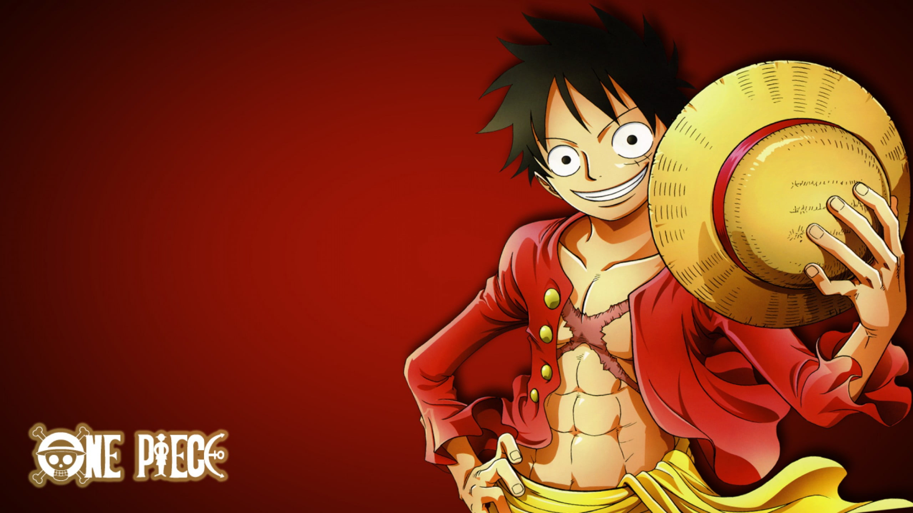
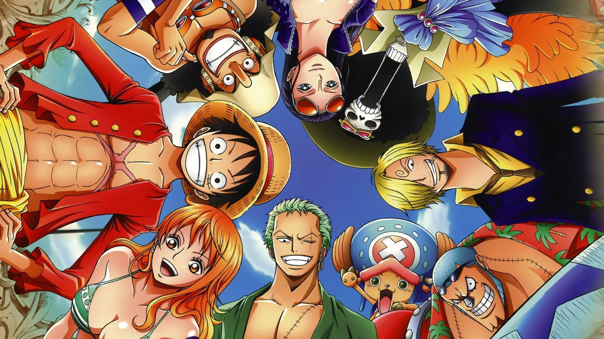
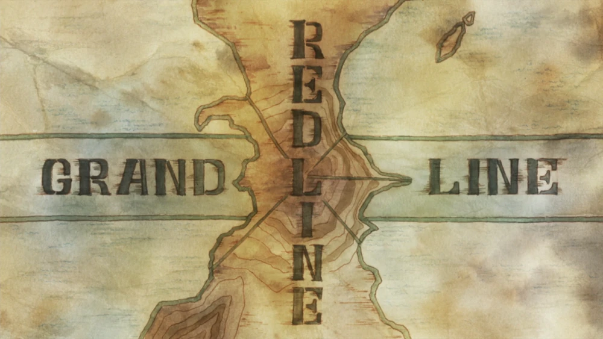

Vítej na stránce ohledně anime One Piece
One Piece je slavné japonské anime a manga kde hlavní postavou je Monkey D. Luffyho a jeho posádka kteří se vydávájí na cestu za legendárním pokladem One Piece.

Monkey D. Luffy
Kapitán Straw Hat pirátů

Straw Hat Crew
Posádka má 10 členů (na fotce není zobrazena postava Jimbei)

Going Merry
První loď Straw Hat posádky

Grand Line
Název moře ve kterém se odehrává velká část děje